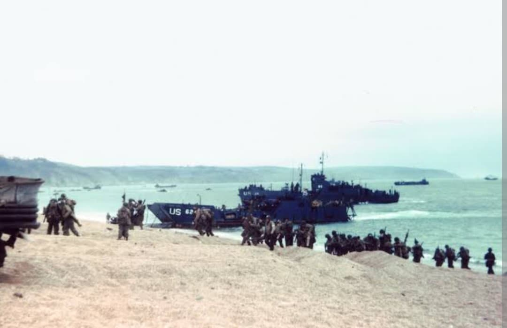
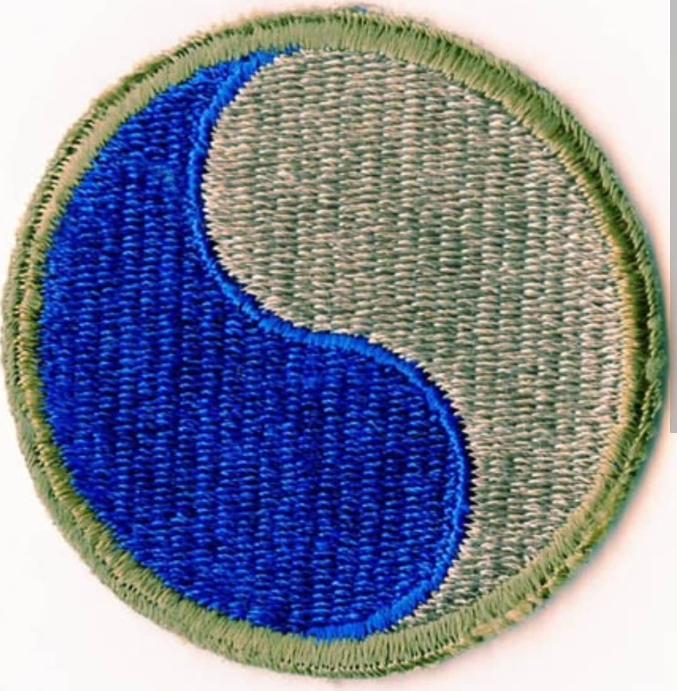
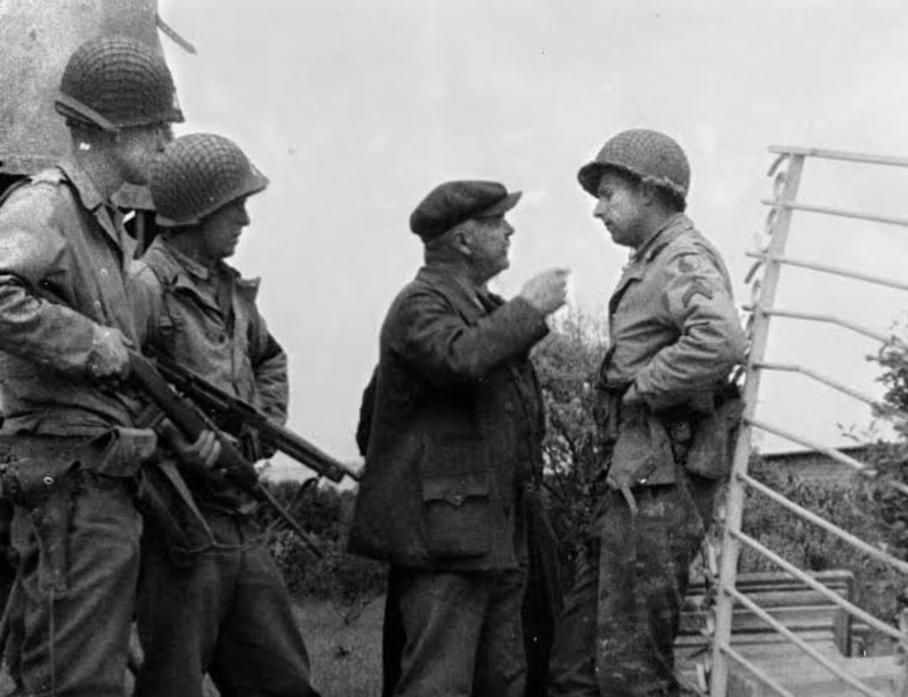
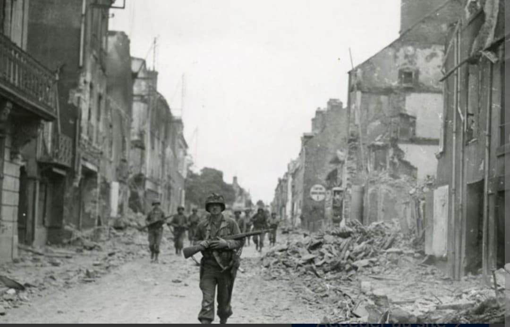

Les héros du secteur de la mort à Omaha Beach et les libérateurs de la ville martyr de Saint-Lô

La 29th Infantry Division de l'armée américaine, surnommée “Blue and Gray” (Le Bleu et le Gris), est l'une des unités les plus célèbres de la Seconde Guerre mondiale.
Composée à l'origine de Gardes nationaux des États du Maryland et de Virginie, la division est entrée dans l'histoire en subissant des pertes catastrophiques le matin du 6 juin 1944 sur la plage d'Omaha Beach (secteurs Charlie, Dog White, Dog Green et Dog Red). Elle s'illustrera ensuite dans la capture éprouvante de Saint-Lô.
Créée en juillet 1917, la division réunit des régiments issus d'États ayant combattu dans des camps opposés durant la guerre de Sécession : le bleu pour le Nord (l'Union) et le gris pour le Sud (la Confédération).
Son insigne d'épaule prend la forme d'un symbole coréen du Yin et du Yang bleu et gris dans un cercle, matérialisant l'union reconstituée. Sa devise officielle est “29, Let's Go!” (29e, en avant !), une phrase prononcée par le général Dwight D. Eisenhower lors de son inspection de la division avant le D-Day.

Le jour J à 06h30, le **116th Infantry Regiment** de la 29th Division constitue la première vague d'assaut sur la partie ouest d'Omaha Beach. La compagnie A (originaire de Bedford, Virginie) est quasi anéantie en quelques minutes sous le feu croisé des paires de mitrailleuses MG 42 et de l'artillerie allemande depuis le WN 62, WN 65 et WN 72.
Malgré des pertes effroyables, les survivants parviennent au pied des falaises. Sous le commandement énergique du général de brigade **Norman Cota**, les soldats réussissent à percer les défenses allemandes au niveau de la percée de Vierville-sur-Mer et à sécuriser la tête de pont.

Durant le mois de juin et juillet 1944, la 29th Division s'enfonce dans le bocage normand. Face à une résistance acharnée dans la guerre des haies, chaque kilomètre gagné coûte de lourdes pertes.
Le 18 juillet 1944, après des semaines de combats acharnés, les hommes du général Charles H. Gerhardt entrent enfin dans la ville martyr de **Saint-Lô**, capitale des ruines. Transférée ensuite en Bretagne, la division participe à la bataille pour la prise de la forteresse de **Brest** en septembre 1944.

À l'automne 1944, la 29th Division est déplacée vers la frontière germano-belge et participe aux violents affrontements le long de la **Ligne Siegfried** et sur la rivière Roer.
En 1945, la division franchit le Rhin, participe à l'encerclement de la poche de la Ruhr et pousse vers l'Elbe, où elle réalise sa jonction avec les forces soviétiques à l'aube de la capitulation de l'Allemagne nazie en mai 1945.
En 242 jours de combats ininterrompus, la 29th Infantry Division enregistre plus de **20 400 pertes** (dont environ 3 870 tués au combat). Le taux de renouvellement des effectifs dans les régiments d'infanterie a dépassé 200 %.
Deux de ses membres ont reçu la Medal of Honor. La ville de Bedford en Virginie, ayant perdu 19 de ses enfants le 6 juin 1944 au sein du 116th Infantry Regiment, accueille aujourd'hui le Mémorial National du D-Day aux États-Unis.
Page du Musée HOP WW2 – Section États-Unis & Unités d'Élite